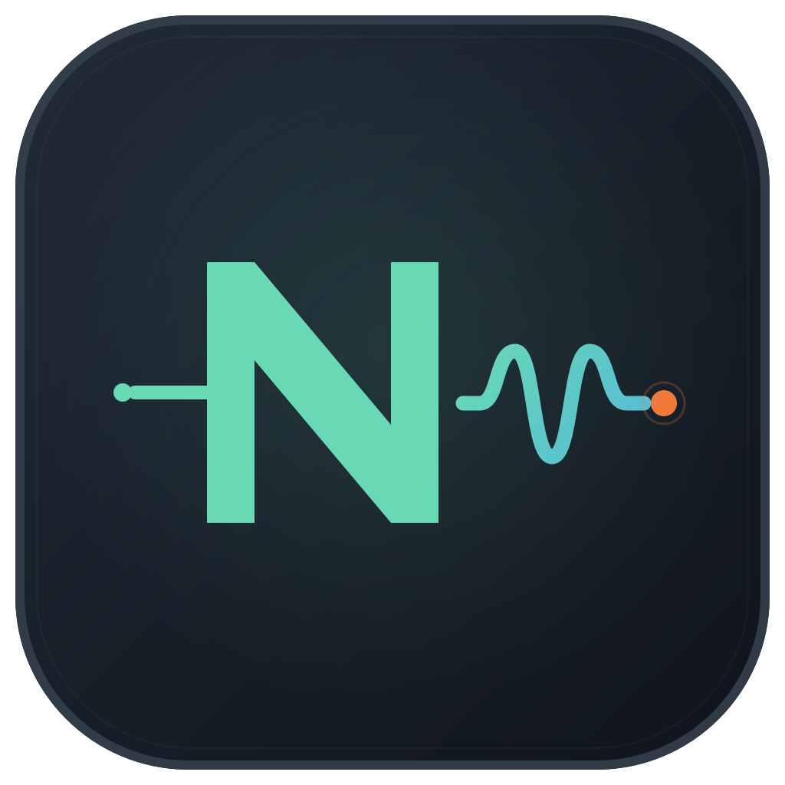
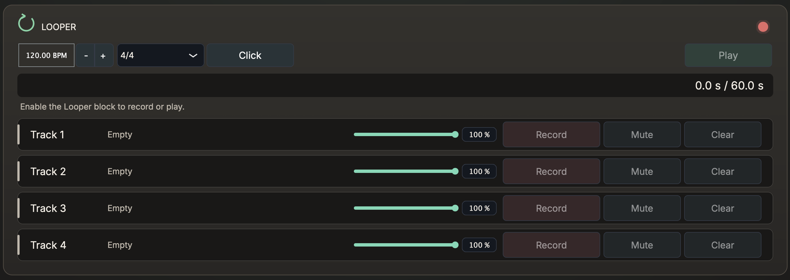
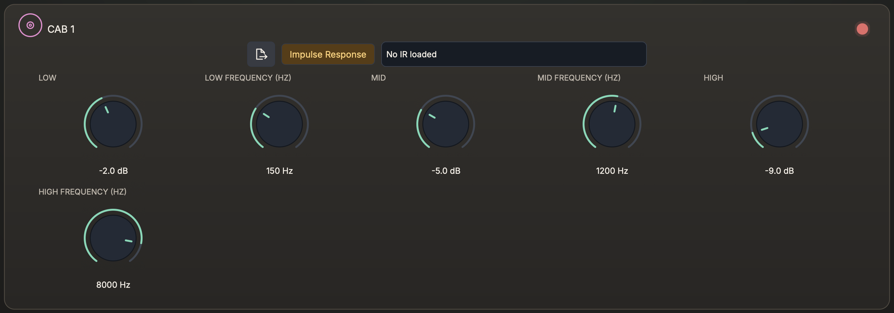

Before the amp
Clean up noise with the gate, shape the attack with an 1176-style compressor, and push the amp with a Clean Boost, 808 Drive, or NAM pedal capture. Use the pre EQ to shape what hits the amp.

NAMplifiedKeep one amp in place while you audition captures in the other with Previous and Next. Blend both amps, split them by frequency, or give each its own cab IR.
Free and open source · Plug-in and standalone

Freq Split. With both amps active in Parallel, set the crossover frequency to send low frequencies to Amp 1 and high frequencies to Amp 2.
Pitch shift, gate, compression, and boost before the amps. Airwindows TakeCare chorus, delay, and reverb after the cabs.
Run the amps in series, then blend two cabinet IRs.

Pair each amp with its own cabinet IR.

Blend both amps through one shared cabinet IR.

Open a folder of NAM captures once. Then use Previous and Next in either amp slot to hear the neighboring capture with a single click, without reopening a file picker.
Keep one amp in place while you audition captures in the other. Your routing, cabinet IRs, and effects stay in the chain so you can hear each capture in context.
Browse TONE3000 directly from the amp editor to find more captures.
NAMplified is an independent project and is not affiliated with or endorsed by TONE3000.
Record a rhythm part, switch captures, then add a lead or harmony over the same loop.
Record loops up to 60 seconds with a visual count-in, optional metronome, selectable time signatures, and bar-aligned recording. Adjust level, mute, or clear each track independently.

Load up to two cabinet impulse responses to shape the sound of your amps.
Supported files
WAV, AIFF, FLAC, and OGG

Tighten the signal before the amp or add space and movement after the cab.
Clean up noise with the gate, shape the attack with an 1176-style compressor, and push the amp with a Clean Boost, 808 Drive, or NAM pedal capture. Use the pre EQ to shape what hits the amp.
Add digital or analog delay, stereo chorus, and Room, Plate, Cloud, or IR reverb. Use the post EQ to shape the finished tone.
“Warm clean tone with a little chorus.”
After the initial setup, Preset Builder runs locally on your Mac.